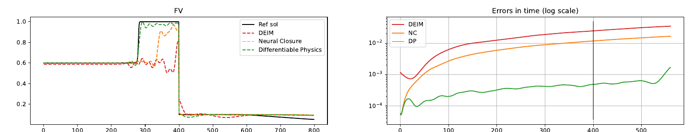

Modèles réduits profonds
Thèse de doctorat, chapitre 5 (travail non publié). Accélérer un solveur de trafic fortement non linéaire en apprenant, avec un réseau de neurones, le flux de sa version réduite.
Problème
Les algorithmes d'optimisation et de contrôle appellent le solveur non linéaire des centaines de fois. La décomposition orthogonale aux valeurs propres (POD) des snapshots fournit une base Φ de Nm modes, qui compresse l'état ρ ∈ ℝNx en ρ̂ = Φ⊤ρ. Mais la dynamique réduite obtenue par projection de Galerkin,
ρ̂′(t; μ) = Φ⊤F(Φ ρ̂(t; μ); μ)
demande toujours d'évaluer le flux F en grande dimension à chaque pas de temps, ce qui annule le gain. L'interpolation empirique (DEIM), qui traite d'habitude ce point, échoue ici : sur un choc, elle produit des oscillations et reste proche de la condition initiale.
Approche
Un réseau F̂θ apprend en un seul bloc l'hyper-réduction et le terme de fermeture : il prend (ρ̂, μ) en entrée et prédit le flux compressé, de sorte que la phase en ligne ne manipule que la dimension réduite. Le schéma est intégré par Euler explicite, ρ̂n+1μ = ρ̂nμ + Δt F̂θ(ρ̂nμ, μ). Deux stratégies d'entraînement sont comparées, sur le même réseau et les mêmes données.
Neural Closure (NC), ajustement du modèle : on compare la sortie du réseau au flux projeté,
LNC(θ) = MSE(F̂θ(ρ̂projμ; μ), F̂projμ)
Differentiable Physics (DP), ajustement de trajectoire : on compose l'intégrateur Sθ1 sur K pas et on compare l'état prédit ρ̂DP,n+Kμ,θ = SθK(ρ̂nμ) à la trajectoire projetée,
LDPK(θ) = MSE(ρ̂DPμ,θ, ρ̂projμ)
ainsi qu'une variante LDPK,int qui moyenne l'erreur sur toute la trajectoire k = 1, …, K.
Réseau : perceptron multicouche de 4 couches de 32 neurones, activation tanh, optimiseur Adam (lots de 16, dropout de 30 %, taux d'apprentissage 10−3 puis décroissance exponentielle).
Validation
Cas test : deux routes reliées par une jonction (400 mailles chacune, Nx = 800), densités initiales 0,6 puis 0,1. Le paramètre est la densité maximale de la route sortante, μ2 ∈ [0,1 ; 0,9] : les petites valeurs bloquent la jonction et créent un choc remontant vers la gauche, les grandes laissent passer les véhicules et produisent une onde de détente.
Entraînement sur 300 valeurs de μ2 et 562 pas de temps, validation sur 9 autres valeurs, erreurs mesurées en MSE sur 12 valeurs équiréparties. Deux tailles de base sont testées, Nm = 5 et Nm = 20. La perte de validation de NC stagne dès le début (arrêt à 500 époques), celle de DP continue de décroître jusqu'à 2000 époques.
Résultats

DP reconstruit l'état complet en positionnant correctement le front de choc, là où NC le place à mi-chemin et où la DEIM ne le capture pas. Avec K = 50 pas déroulés et la moyenne en temps, l'erreur reste plate sur tout l'horizon, signe d'un modèle réduit stable. Les cas les plus difficiles sont les temps longs et les petites valeurs de μ2, où le choc se propage le plus loin.
Bilan et perspectives
Construire la perte à partir du schéma numérique lui-même (DP) donne un modèle réduit nettement plus fidèle que l'apprentissage du seul second membre (NC) ou que la DEIM, sur un cas où le choc met ces méthodes en difficulté.
Brancher le modèle réduit dans la boucle d'optimisation de TRoN.jl, à la place du solveur complet, et l'étendre aux réseaux de plusieurs routes. Tester des architectures récurrentes (RNN, LSTM), adaptées aux problèmes d'évolution. Une réimplémentation ouverte en Python est prévue.
Outils
Python, TensorFlow (GPU), POD, DEIM